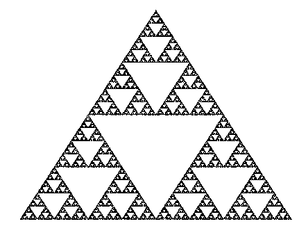

Large Data
Introduction
The program I am making allows the user to visualize a data set as a triangulation using a Python library called Matplotlib. My job is to allow the user to highlight elements in this visualization and record the highlighted triangles with mouse clicks. The maestro (my boss) mentioned that each recorded node for this triangulation is roughly 1 mile away from the nearest node. A land mass like Antarctica would hold about 5.4 million nodes. This is the size of data we're dealing with.

The problem
First, we need to find out whether a click was inside a triangle. I used the Barycentric technique and created my own function that takes in the three corners of the triangle, a point, and returns a true or false of whether the point is inside the triangle. Problem is, we have a lot of triangles on the screen, and we don't want to perform this check for every last one of them.
So how do we limit the triangles to check?
Just like with the concept of sorting an array to search it faster, I decided to do a similar thing with my triangles. I could push most of that virtual heavy lifting toward the beginning of the program so it doesn't need to make as much computation during runtime. But in order to sort a triangle, you need to be able to qualify it with one number. We got our triangles as three XY coordinates. That's 6 numbers. So that got me thinking, 'What does a triangle have only one of?'. Well, its centroid, of course!
Yes, I know that a triangle's centroid isn't one number.
But it gives me something a little better to work with. I decided to make two lists –– one sorted by Centroid X-coordinate and one sorted by Centroid Y-coordinate. Since my mouse click data comes in two variables –– X and Y –– having these data structures will help me perform the necessary checks. Okay, lets recap. Here are my data structures:
- hmap : Hash Map [key = centroid | data = triangle_data] –– to get the triangle data
- listX : List [index = centroidX | data = centroid] –– to search for centroids with a similar X
- listY : List [index = centroidY | data = centroid] –– to search for centroids with a similar Y
So how do we use this information?
Here's my algorith:
- We start with the click data, which gives us (valueX, valueY)
- Use valueX and listX to find the triangle closest to my mouse in the X direction. Is your mouse in that triangle?
- Do the same for Y, is your mouse in that triangle?
- Do the same for Y, add the closest Y triangle into setY.
- Now we pan outward performing these checks with valueX-1, valueX+1, valueY-1, and valueY+1
Now I know what you're probably thinking. It sounds like a decent algorithm up until the panning part, where you now have to check outward. Checking outward feels like a worst case O(n) right? Well, it is... but I knew from the background of my task that these data points are almost uniformly distributed. That is to say it could be so bad that we need to check every point, but on average, we'll probably only need to check one or two.
- Worst Case: O(N)
- Best Case: O(log(n))
- Average Case: O(x), x being lower when triangles are closer to equilateral. Uniform Distribution = O(log(n))
Wrapping up
I think that most people don't appreciate the difference a simple change in algorithm makes. We're so spoiled nowadays, with powerful electronic devices, that it doesn't feel useful to spend a little more effort making your code more efficient. But in this particular situation –– since it's for research and large data –– efficiency was a strict requirement and helped me open my eyes to the impact of algorithms.
